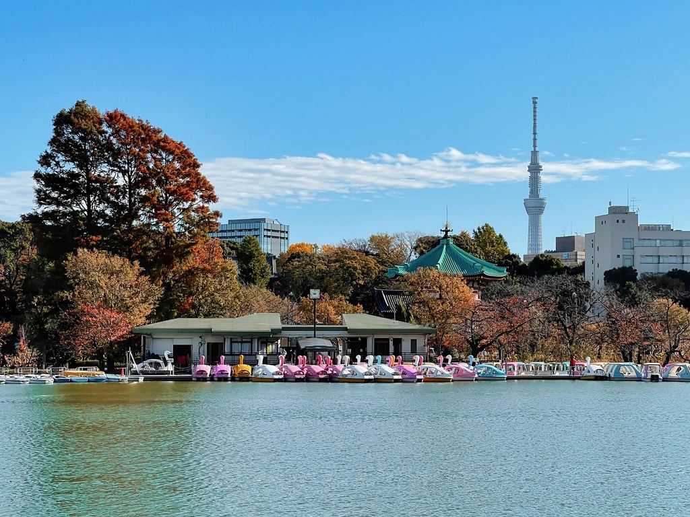

Local Guide · Model Itinerary
Four days in Tokyo, Muslim-friendly — a realistic itinerary
Most Tokyo itineraries ignore the two things that actually shape a Muslim traveler's day: where to pray, and what you can eat. This one plans both into every day. It is written from our own neighborhood — a private villa in Higashi-Mukojima, Sumida, where every day begins and ends with your own prayer rooms and your own halal kitchen.
How this itinerary works. Fajr and Isha are prayed at the villa — it has two prayer rooms with qibla markings. Dhuhr and Asr are planned around verified prayer spaces on each route. Restaurant details (halal status, addresses, prices) are in our companion guide: Halal food & mosques near Tokyo Skytree and Asakusa →
Day 1
Arrive slow — Asakusa & Tokyo Skytree
- MorningArrive, drop luggage. Breakfast from the konbini or cook in the villa's halal kitchen. Walk the quiet old streets of Higashi-Mukojima — this is the Tokyo most tourists never see.
- MiddayTobu line to Asakusa (~20 min): Senso-ji temple, Kaminarimon gate, Nakamise shopping street. Dhuhr at the villa before leaving, or at Asakusa Sushiken's customer prayer room if you lunch there.
- LunchGYUMON halal wagyu ramen (prayer room + wudu on site) or halal-certified sushi at Asakusa Sushiken.
- SunsetTokyo Skytree (~15 min from the villa) for dusk views. Asr/Maghrib at the official prayer room on the Skytree 1F Group Floor.
- DinnerHalal-certified A5 wagyu yakiniku at PANGA Asakusa — book ahead. Back home in 25 minutes.
Day 2
Ueno, halal shopping & Akihabara
- MorningUeno Park (~30 min): the national museums, or the panda house with children.
- MiddayWalk down to Ameyoko market street. Dhuhr at Masjid As-Salaam, two minutes from the market (Friday congregations 12:00 / 12:45 / 13:20 — a natural Jumu'ah day).
- AfternoonStock the villa's kitchen: spices and Asian ingredients in the Ameyoko Center Building basement, then Akihabara (one JR stop) for electronics and anime.
- DinnerLamb hotpot and hand-pulled noodles at Tokyo Muslim Hanten in Kinshicho, on the way home — or carry groceries back and cook.
Day 3
West Tokyo — Meiji Jingu, Harajuku, Shibuya & Tokyo Camii
- MorningHanzomon-line through-train from Hikifune — no transfer — toward Omotesando (~45 min). Walk Meiji Jingu's forest shrine and Harajuku's Takeshita Street.
- MiddayTokyo Camii, Japan's largest mosque, is two stops away (Yoyogi-Uehara): pray Dhuhr under the Ottoman dome, browse the halal market downstairs. On Fridays, adhan 12:30.
- AfternoonBack to Shibuya: the scramble crossing, Shibuya Sky if you want one more skyline.
- DinnerHalal yakiniku at Gyumon Shibuya (the original), or ride the through-train straight home and cook a quiet dinner.
Day 4
Choose your finale
- Option ATokyo Disneyland (~65–75 min door-to-door). The parks list allergen-friendly menus; carrying halal snacks is wise. Pray in a quiet corner or back at the villa.
- Option BGinza & Tsukiji Outer Market — the Asakusa Line runs from Keisei-Hikifune to Higashi-Ginza with zero transfers (~30 min). Grilled seafood and tamagoyaki are the safest street picks; ask about ingredients.
- Option COdaiba (~50 min): teamLab, the bay, and the Gundam statue.
- EveningLast dinner at Amara in Solamachi under the lit-up Skytree, 15 minutes from bed.

—Getting around: every major sight from the villa
Door-to-door estimates including the 7–10 minute walk to the station. Verify exact routes in Google Maps on the day.
| Destination | Route | Transfers | Door-to-door |
|---|---|---|---|
| Tokyo Skytree | Keisei-Hikifune → Oshiage (1 stop) | 0 | ~15 min |
| Asakusa (Senso-ji) | Tobu line direct, or Asakusa Line through-train | 0 | ~20 min |
| Ueno | via Asakusa, Ginza Line | 1 | ~30 min |
| Akihabara | Asakusa Line → Asakusabashi + JR 1 stop | 1 | ~25–30 min |
| Ginza | Asakusa Line through-train → Higashi-Ginza | 0 | ~30–35 min |
| Tsukiji Outer Market | Asakusa Line → Higashi-Ginza + walk | 0 | ~35–40 min |
| Shibuya | Hanzomon Line through-train | 0–1 | ~45–50 min |
| Shinjuku | Asakusa Line + Toei Shinjuku Line | 1 | ~45 min |
| Harajuku / Meiji Jingu | Hanzomon → Omotesando + 1 stop or walk | 1–2 | ~50–55 min |
| Odaiba | Asakusa Line → Shimbashi + Yurikamome | 1 | ~50 min |
| Tokyo Disneyland | Kinshicho → JR to Tokyo → Keiyo Line | 2–3 | ~65–75 min |
—Arriving from the airport
- From Haneda: the Keikyu/Asakusa Line runs through to our station, Keisei-Hikifune — around 50 minutes, often with no transfer at all. Prayer rooms at Haneda: Terminal 2 and Terminal 3 (Terminal 1 has none).
- From Narita: Keisei Access Express toward Oshiage/Hikifune, around 60 minutes. All Narita terminals have prayer rooms with wudu facilities.
Your base for all of it
One group per night, up to 10 guests. Two prayer rooms with qibla markings, halal-only kitchen, wudu-ready bath, and sleep designed by a doctor — 15 minutes from Tokyo Skytree.
Check availability